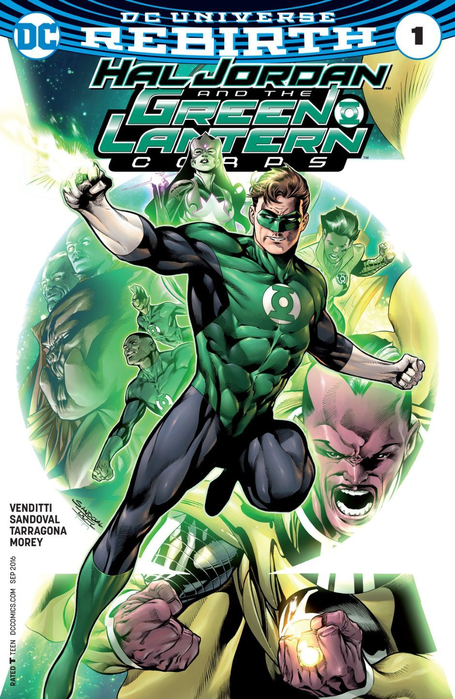
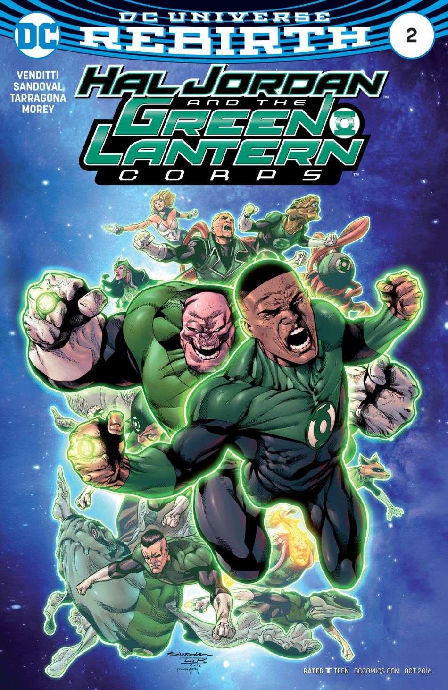
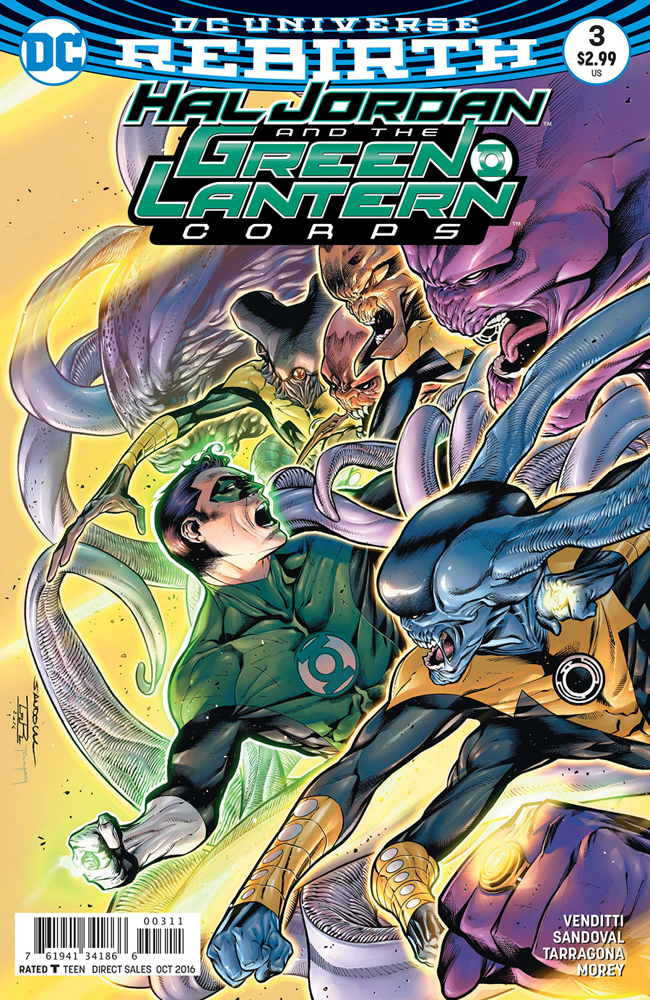
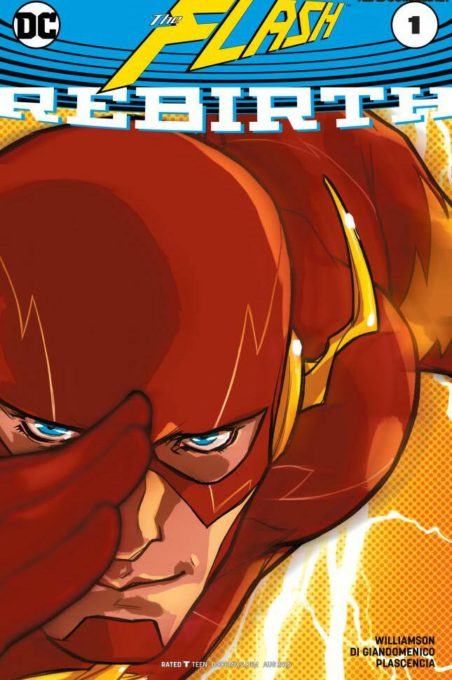
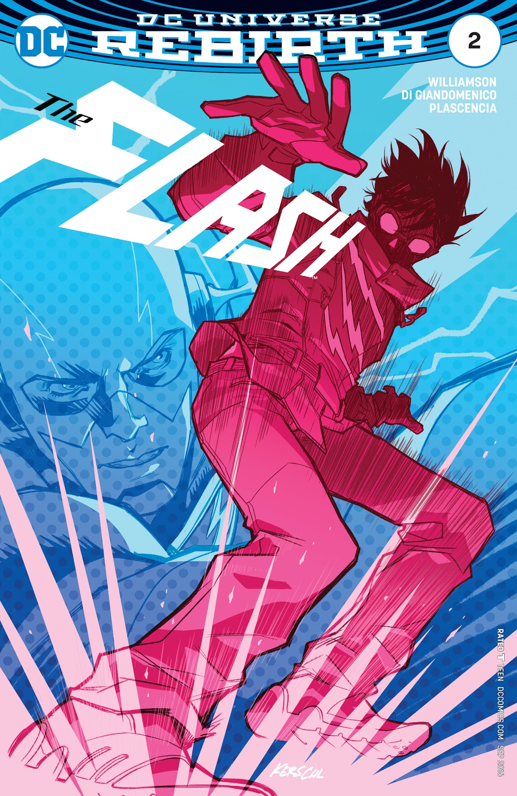

Comics
Por: Alan Elizalde

Las diferentes Eras del Cómic Americano
Hubo al rededor de 5 eras del comic americano La edad de Platino (1895-1938), la edad de Oro (1938-1956), la edad de Plata (1956-1971), la edad de Bronce (1971-1986), la edad Moderna (1986-actualidad).
La edad de platino (1895-1938)
La edad de Platino de los comics norteamericanos dio comienzo con la publicación Hogan´s Alley en 1895, es en este título en el que apareció por primera vez el famoso Yellow Kid. Hogan´s Alley comenzó a publicarse en los periódicos del magante William Randolph Hearst. Su importancia fue tal que el termino “prensa amarilla” viene de los periódicos que publicaban precisamente este Yellow Kid (Chico Amarillo). Es precisamente en esta serie cuando aparecen por primera vez los globos como forma de comunicación entre los personajes. Si bien lo que caracteriza a Yellow Kid es que su forma de comunicación era a través de frases escritas en su camisa.
La edad dorada de los comics (1938-1956)
Con la llegada del action comics #1 comienza la era dorada de los comics.
Los cómics aparecen en esta época como satisfacción de una necesidad de escape a los efectos de la Crisis del 29: una forma de entretenimiento de bajo costo y grandes beneficios económicos.
La por entonces National Allied Publications hizo su negocio con la tira Detective Comics, que a la larga se transformaría en el nombre oficial de la editorial. Esta Era está claramente signada por la creación de Superman en 1938, génesis absoluta del género de superhéroes.
Otros personajes destacados son Batman y Flash, el primer creado en 1939 para la revista Detective Comics y el segundo en 1940 para la misma publicación.
Los historiadores del cómic denominaron a este período como “Era Dorada” por los fuertes ingresos económicos para la época y la popularidad del hobby.
Cómics destacados: Detective Comics #27 (debut de Batman), Action comics #1 (debut de Superman), World’s Finest, Detective Comics #38 (debut de Robin), Captain America Comics #1 (debut del Capitán América)
La edad de Plata (1956-1971)
De Showcase a Amazing Spiderman. La era de plata del cómic se alimentó de la Segunda Guerra Mundial para muchas de sus historias, además la censura genera la primera gran crisis de ventas y nace la Casa de las Ideas, también conocida como Marvel Comics.
Fredric Wertham es un nombre clave para entender la Era de Plata del cómic. En su ensayo, la seducción del inocente, los cómics fueron al banquillo de acusados por incitar a la violencia, la homosexualidad y el vandalismo. Lejos de ser tomado en broma, las autoridades tomaron cartas en el asunto con una serie de juicios que llevaron a editoriales como EC a la bancarrota. Las restantes tuvieron que suscribirse al Comic Code Authority, unos lineamientos de autocensura que garantizaban que las lecturas fueran aptas para todo público.
Otro hecho fundamental de este período es la creación de Marvel Comics, anteriormente conocida como Timely Productions, y con ello muchos de sus personajes más populares: Spider-Man, Los Cuatro Fantásticos, Iron Man y Thor.
Publicaciones destacadas: Showcase, The Amazing Spiderman, Tales of Suspense (debut de Iron Man), Journey into Mystery (debut de Thor), X-Men #1 (debut de los X-Men)
La edad de bronce(1971-1986)
La juventud de los años 70 no era la misma que la de los 60. Las preocupaciones habían cambiado y ahora los jóvenes demandaban cómics con otro talante.
Si bien La Edad de Plata nos trajo los conceptos de continuidad y personajes tridimensionales, estos fueron envejeciendo a la vez que sus autores. Tuvo que llegar una nueva hornada de autores para plasmar en el papel lo que en la calle era ya una realidad.
Los personajes maduraron y conceptos como la drogadicción se plasman en las historietas. Aún hoy se recuerda la impactante portada del Green Lantern/Green Arrow #5 realizada por Neal Adams en la que se podía ver como Speedy se drogaba.
El Comic Code Authority comenzaba a perder autoridad.
Los problemas raciales también comienzan a ser importantes en los cómics y los personajes de raza negra van ganando peso en las diferentes colecciones, apareciendo al fin un personaje lo suficientemente bien construido como para tener su propia colección. Hablamos de Luke Cage.
Es también en esta edad, cuando las mujeres comienzan a tener una presencia real. No a limitandose a ser la novia del protagonista o damisela en apuros de turno. Aparece Tormenta (una mujer negra y mutante) y otras tales como Hulka, Capitana Marvel, etc.
La propia actualización de la Patrulla X es una declaración de lo que fue esta era. Claremont reinició la colección convirtiendo al grupo en unos jóvenes odiados —Los mutantes sufrían persecución por su condición racial y no por sus acciones— y perseguidos por la población.
Las 2 principales editoriales, tanto Marvel como DC, nos trajeron ya en los años finales de la edad de bronce 2 grandes macrosagas, para poner orden en sus respectivos universos editoriales.
Marvel Comics publicó entre 1984 y 1985 sus Secret Wars. Colección en la que reunió a los principales personajes y con la que aprovechó para realizar ciertos cambios en algunas de las colecciones insignias de la editorial.

DC Comics por su parte, publicó la famosa Crisis en Tierras Infinitas entre los años 1985 y 1986. Esta fue una serie de 12 números con mucha más importancia relativa que la de Marvel Comics. La editorial ponía al fin orden a 30 años de caos con los universos paralelos y las diferentes versiones de los personajes, poniendo a cero la continuidad. Su importancia fue tal que desde ese momento se comenzó a hablar de una DC pre-Crisis y una DC post-Crisis.
En conclusión. Podríamos decir, que dado que la nueva hornada de autores, había crecido leyendo cómics de la edad de plata. Se habían dado cuenta del paulatino alejamiento del cómic con la sociedad y pretendían plasmar su propia visión de la sociedad. Abordando temas como el racismo, el feminismo o drogadicción.
Gracias a estos nuevos autores, los cómics al fin habían llegado a su mayoría de edad. Adecuándose a un público más exigente con unas historias más complejas y dirigidas a un público más adulto.
La edad moderna (1986-actualidad)
La era actual de los comics la cual se divide en pequeñas eras
- La edad oscura la salida de Watchmen marcó un antes y un después: ahora las historias evolucionarán en un tono mucho más oscuro. Así lo podemos constatar en las sucesivas muertes de personajes populares como Jason Todd y Superman. A su vez, los anti-héroes comenzaron a ser un fetiche cada vez más recurrente: Spawn, Deadpool y Punisher entre otros. En los 90s el mercado evolucionó de tal forma que comenzó la avalancha de merchandising relacionado a los súper héroes: tarjetas, figuras de acción, camisetas y todo lo que un coleccionista pudiese llegar a desear. Paradójicamente, muchos escritores comenzaron a ver a las editoriales más grandes como enemigos acérrimos. El ejemplo de Dark Horse, la primer editorial independiente, ofició como camino a seguir de muchos guionistas. Así la industria mainstream vió el nacimiento de Image Comics, un grupo de escritores y dibujantes renegados de Marvel con figuras de la talla de Jim Lee, Rob Liefeld y Todd MacFarlane.
- La edad moderna Entre 1996 y 2008 la decadencia en las historias provocó una segunda crisis de ventas, sobre todo en Marvel. La entrada en la mesa ejecutiva de Joe Quesada trajo un aire fresco de negocios: con el fin de paliar los efectos de las bajas ventas, Quesada vendió muchas licencias de personajes a productoras como Fox, lo que derivó en una serie de películas con gran éxito de taquilla.
- La edad del cine-comic Tras el exito de las peliculas de Marvel y DC se vio un cambio radical en la creacion de historias dando paso a lo que actualmente hay en venta.
Publicaciones destacadas: A Death in the Family, The Killing Joke, The Death of Superman, Spawn #1, New Mutants #98 (debut de Deadpool), Sin City.
Publicaciones destacadas: Marvel vs DC, Amalgam Comics, Civil War, The Walking Dead.
Teen titans
Spectacular Spider-Man
Guia de inicio rapido
Para poder a leer comics actualmente y no perderte en el camino te recomiendo que leas Flashpoint que es el evento que crea todo el universo actual de DC.
Flashpoint marca el fin del universo Post-crisis e inician los nuevos 52 (new 52)
Ve el video guia si aun tienes dudas
Comics de rebirth recomendados
Hal Jordan and Green lantern corps
Es sorprendente, una obra que me encanto, te la recomiendo 100%
  Action Comics rebirth
En definitiva, “Action Comics #957” es un comienzo genial y esperanzador para todos los fans de Superman y DC en general. Se sigue un camino bien trazado desde el final de New 52, y especialmente desde “DC Universe: Rebirth #1”, que parece estar lleno de consistencia e ideas bien pensadas y construidas. Por primera vez en mucho tiempo tenemos intriga en el argumento, y transmite una ilusión perdida desde hace años, especialmente en Superman, que damos gracias a Rao por haberla recuperado. Solo cabe esperar que Jurgens aproveche su buen estado de forma para darnos buenas historias de Superman, Lois Lane, Lex Luthor, Jimmy Olsen y compañía.
Flash rebirth
Es flash, un loquillo rompiendo el universo, pero importante para eventos futuros, tambien tiene un argumento interesante, si te gusto la versión de wedon entonces creo que este flash no te va a gustar
 Evento: Dark nights Metal
- Días Oscuros: La Fragua
- Días Oscuros: El casting
- Noches Oscuras: Metal #1
- Noches Oscuras: Metal #2
- Teen Titans #12 (Resistencia de Gotham)
- Nightwing #29 (Resistencia de Gotham)
- Escuadrón Suicida #26 (Resistencia de Gotham)
- Flecha Verde #32 (Resistencia de Gotham)
- Batman La Muerte Roja (conexión conectada al Flash)
- Batman La Máquina Asesina (tie-in conectado a Cyborg)
- Batman El Madrugador (conexión conectada a Linterna Verde)
- Noches Oscuras: Metal #3
- Batman El Ahogado (conexión conectada a Aquaman)
- Batman El Despiadado (conexión conectada a Wonder-Woman)
- Batman El Devastador (conexión conectada a Superman)
- The Flash #33 (Bats Out of Hell tie-in)
- Liga de la Justicia #32 (Bats Out of Hell tie-in)
- Hal Jordan & The Green Lantern Corps #32 (Bats Out of Hell tie-in)
- Batman Perdido (tie-in)
- El Batman que ríe (tie-in)
- Liga de la Justicia #33 (Bats Out of Hell tie-in)
- Noches Oscuras: Metal #4
- Halcón Encontrado
- Noches Oscuras: Metal #5
- Noches Oscuras: Metal #6